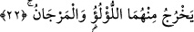

diğeri acı ve tuzlu iki denize yol verdi. Yâni birbirine komşu olacak ve yüzeyleri
birbirine dokunacak, göze görünen bir ayrılık olmayacak şekilde olan iki denizi bir
araya getirdi. Dicle nehrinin denize girip yararak içinde kilometrelerce gittiği halde tadı
değişmeden kaldığı gibi.
Ayrıca denilmiştir ki; Allah Faris/İran Basra Körfezi ile Rum Okyanusunu/Akdenizi
birbirine kavuşmak üzere salmıştır. Zira bu iki deniz, Okyanustan ayrılan iki körfezdir.
Sa’dî Müftî demiştir ki; buna göre “yeltekıyân” fi’li ile, Okyanusa salınmaları
kasdedilmişse gizli haldir. Okyanustan ayrılmış iki körfez oldukları kasdedilmişse,
asılları birdir, anlamına gelir.
20. Aralarında bir engel vardır, birbirine geçip karışmazlar.
“Aralarında bir engel vardır.” Allah’ın kudretinin bir eseri olarak görünmeyen bir
engel veya yerden kaynaklanan bir mâni vardır. Berzah, “iki şey arasına giren engel”dir.
Bundan dolayıdır ki, dünya ile âhiret arasında bulunan kabir hayatına “Berzah” ismi
verilmiştir. Vesveseye de şüphe ile yakîn arasında engeller oluşturduğundan “îman
engeli” denir.
“Birbirine geçip karışmazlar.” Yâni, birbirine özelliklerini bozacak şekilde hemen
karışmazlar. İki denizin yapıları gereği hemen birbirine karışmak ve etkilemek olduğu
halde, hemen karışmaz, bir zaman kendi halleri üzerinde kalırlar. Yahut, her iki deniz
kendi sınırlarını aşıp aradaki yeri istila etmez, insanların o yerden yararlanmalarına
engel olmazlar. Âyette geçen “lâ yebğıyân” fiili, ya istemek anlamındaki (ibtiğa)
kökünden alınmıştır. Ya “kendilerine takdir edilmiş olanın dışında başka bir şey istila
etmek istemezler,” anlamına gelir. Yahut “tecavüz” anlamındaki “bağy” kökünden
türetilmiş olup “iki deniz kendilerine çizilmiş olan sınırı tecavüz etmezler”
anlamındadır.
21. O halde Rabbinizin nimetlerinden hangisini yalanlayabilirsiniz?
Halbuki, bu iki denizdeki faydalar ve ibret verici durumları dolayısıyla yalanlamayı
kabul edecek en ufak bir sebep yoktur.